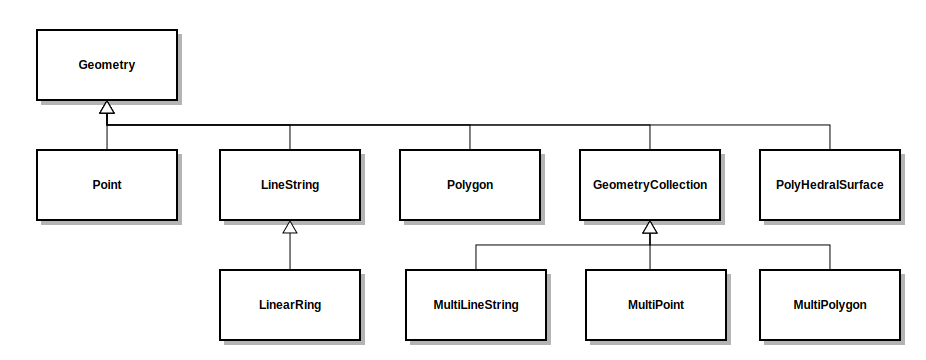

5.0.0.M1
Copyright © 2007-2020 The Querydsl Team
This copyrighted material is made available to anyone wishing to use, modify, copy, or redistribute it subject to the terms and conditions of the Apache License, Version 2.0.
Table of Contents
Querydsl is a framework which enables the construction of statically typed SQL-like queries. Instead of writing queries as inline strings or externalizing them into XML files they can be constructed via a fluent API like Querydsl.
The benefits of using a fluent API in comparison to simple strings are for example
code completion in IDE
almost none syntactically invalid queries allowed
domain types and properties can be referenced safely
adopts better to refactoring changes in domain types
Querydsl was born out of the need to maintain HQL queries in a typesafe way. Incremental construction of HQL queries requires String concatenation and results in hard to read code. Unsafe references to domain types and properties via plain Strings were another issue with String based HQL construction.
With a changing domain model type-safety brings huge benefits in software development. Domain changes are directly reflected in queries and autocomplete in query construction makes query construction faster and safer.
HQL for Hibernate was the first target language for Querydsl, but nowadays it supports JPA, JDO, JDBC, Lucene, Hibernate Search, MongoDB, Collections and RDFBean as backends.
If you are completely new to database access in Java,https://www.marcobehler.com/guides/a-guide-to-accessing-databases-in-java contains a good overview of the various parts, pieces and options and shows you where exactly QueryDSL fits in.
Type safety is the core principle of Querydsl. Queries are constructed based on generated query types that reflect the properties of your domain types. Also function/method invocations are constructed in a fully type-safe manner.
Consistency is another important principle. The query paths and operations are the same in all implementations and also the Query interfaces have a common base interface.
To get an impression of the expressivity of the Querydsl query and expression types go to
the javadocs and explore com.querydsl.core.Query, com.querydsl.core.Fetchable
and com.querydsl.core.types.Expression.
Instead of a general Getting started guide we provide integration guides for the main backends of Querydsl.
Querydsl defines a general statically typed syntax for querying on top of persisted domain model data. JDO and JPA are the primary integration technologies for Querydsl. This guide describes how to use Querydsl in combination with JPA.
Querydsl for JPA is an alternative to both JPQL and Criteria queries. It combines the dynamic nature of Criteria queries with the expressiveness of JPQL and all that in a fully typesafe manner.
Add the following dependencies to your Maven project:
<dependency>
<groupId>com.querydsl</groupId>
<artifactId>querydsl-apt</artifactId>
<version>${querydsl.version}</version>
<scope>provided</scope>
</dependency>
<dependency>
<groupId>com.querydsl</groupId>
<artifactId>querydsl-jpa</artifactId>
<version>${querydsl.version}</version>
</dependency>
And now, configure the Maven APT plugin:
<project>
<build>
<plugins>
...
<plugin>
<groupId>com.mysema.maven</groupId>
<artifactId>apt-maven-plugin</artifactId>
<version>1.1.3</version>
<executions>
<execution>
<goals>
<goal>process</goal>
</goals>
<configuration>
<outputDirectory>target/generated-sources/java</outputDirectory>
<processor>com.querydsl.apt.jpa.JPAAnnotationProcessor</processor>
</configuration>
</execution>
</executions>
</plugin>
...
</plugins>
</build>
</project>
The JPAAnnotationProcessor finds domain types annotated with the javax.persistence.Entity annotation and generates query types for them.
If you use Hibernate annotations in your domain types you should use
the APT processor
com.querydsl.apt.hibernate.HibernateAnnotationProcessor
instead.
Run clean install and you will get your Query types generated into target/generated-sources/java.
If you use Eclipse, run mvn eclipse:eclipse to update your Eclipse project to include target/generated-sources/java as a source folder.
Now you are able to construct JPA query instances and instances of the query domain model.
Place the jar files from the full-deps bundle on your classpath and use the following tasks for Querydsl code generation:
<!-- APT based code generation -->
<javac srcdir="${src}" classpathref="cp">
<compilerarg value="-proc:only"/>
<compilerarg value="-processor"/>
<compilerarg value="com.querydsl.apt.jpa.JPAAnnotationProcessor"/>
<compilerarg value="-s"/>
<compilerarg value="${generated}"/>
</javac>
<!-- compilation -->
<javac classpathref="cp" destdir="${build}">
<src path="${src}"/>
<src path="${generated}"/>
</javac>
Replace src with your main source folder, generated with your folder for generated sources and build with your target folder.
If you are using Querydsl JPA with Spring Roo you can replace
com.querydsl.apt.jpa.JPAAnnotationProcessor
with
com.querydsl.apt.roo.RooAnnotationProcessor
which will handle
@RooJpaEntity and @RooJpaActiveRecord
annotated classes instead of
@Entity
annotated classes.
APT based code generation doesn't work well with AspectJ IDTs.
If you are using Hibernate with an XML based configuration, you can use the XML metadata to create your Querydsl model.
com.querydsl.jpa.codegen.HibernateDomainExporter provides the
functionality for this:
HibernateDomainExporter exporter = new HibernateDomainExporter(
"Q", // name prefix
new File("target/gen3"), // target folder
configuration); // instance of org.hibernate.cfg.Configuration
exporter.export();
The HibernateDomainExporter needs to be executed within a classpath where the domain types are visible, since the property types are resolved via reflection.
All JPA annotations are ignored, but Querydsl annotations such as @QueryInit and @QueryType are taken into account.
To create queries with Querydsl you need to instantiate variables and Query implementations. We will start with the variables.
Let's assume that your project has the following domain type:
@Entity
public class Customer {
private String firstName;
private String lastName;
public String getFirstName() {
return firstName;
}
public String getLastName() {
return lastName;
}
public void setFirstName(String fn) {
firstName = fn;
}
public void setLastName(String ln) {
lastName = ln;
}
}
Querydsl will generate a query type with the simple name QCustomer into the same package as Customer. QCustomer can be used as a statically typed variable in Querydsl queries as a representative for the Customer type.
QCustomer has a default instance variable which can be accessed as a static field:
QCustomer customer = QCustomer.customer;
Alternatively you can define your own Customer variables like this:
QCustomer customer = new QCustomer("myCustomer");
The Querydsl JPA module supports both the JPA and the Hibernate API.
To use the JPA API you use JPAQuery instances for your queries like
this:
// where entityManager is a JPA EntityManager JPAQuery<?> query = new JPAQuery<Void>(entityManager);
If you are using the Hibernate API instead, you can instantiate a
HibernateQuery like this:
// where session is a Hibernate session HibernateQuery<?> query = new HibernateQuery<Void>(session);
Both JPAQuery and HibernateQuery implement the JPQLQuery interface.
For the examples of this chapter the queries are created via a JPAQueryFactory instance.
JPAQueryFactory should be the preferred option to obtain JPAQuery instances.
For the Hibernate API HibernateQueryFactory can be used
To retrieve the customer with the first name Bob you would construct a query like this:
QCustomer customer = QCustomer.customer;
Customer bob = queryFactory.selectFrom(customer)
.where(customer.firstName.eq("Bob"))
.fetchOne();
The selectFrom call defines the query source and projection, the where part defines the filter and fetchOne tells Querydsl to return a single element. Easy, right?
To create a query with multiple sources you use the query like this:
QCustomer customer = QCustomer.customer; QCompany company = QCompany.company; query.from(customer, company);
And to use multiple filters use it like this
queryFactory.selectFrom(customer)
.where(customer.firstName.eq("Bob"), customer.lastName.eq("Wilson"));
Or like this
queryFactory.selectFrom(customer)
.where(customer.firstName.eq("Bob").and(customer.lastName.eq("Wilson")));
In native JPQL form the query would be written like this:
select customer from Customer as customer where customer.firstName = "Bob" and customer.lastName = "Wilson"
If you want to combine the filters via "or" then use the following pattern
queryFactory.selectFrom(customer)
.where(customer.firstName.eq("Bob").or(customer.lastName.eq("Wilson")));
Querydsl supports the following join variants in JPQL: inner join, join, left join and right join. Join usage is typesafe, and follows the following pattern:
QCat cat = QCat.cat;
QCat mate = new QCat("mate");
QCat kitten = new QCat("kitten");
queryFactory.selectFrom(cat)
.innerJoin(cat.mate, mate)
.leftJoin(cat.kittens, kitten)
.fetch();
The native JPQL version of the query would be
select cat from Cat as cat inner join cat.mate as mate left outer join cat.kittens as kitten
Another example
queryFactory.selectFrom(cat)
.leftJoin(cat.kittens, kitten)
.on(kitten.bodyWeight.gt(10.0))
.fetch();
With the following JPQL version
select cat from Cat as cat left join cat.kittens as kitten on kitten.bodyWeight > 10.0
Use the the cascading methods of the JPQLQuery interface like this
select: Set the projection of the query. (Not necessary if created via query factory)
from: Add the query sources here.
innerJoin, join, leftJoin, rightJoin, on: Add join elements using these constructs. For the join methods the first argument is the join source and the second the target (alias).
where: Add query filters, either in varargs form separated via commas or cascaded via the and-operator.
groupBy: Add group by arguments in varargs form.
having: Add having filters of the "group by" grouping as an varags array of Predicate expressions.
orderBy: Add ordering of the result as an varargs array of order expressions. Use asc() and desc() on numeric, string and other comparable expression to access the OrderSpecifier instances.
limit, offset, restrict: Set the paging of the result. Limit for max results, offset for skipping rows and restrict for defining both in one call.
The syntax for declaring ordering is
QCustomer customer = QCustomer.customer;
queryFactory.selectFrom(customer)
.orderBy(customer.lastName.asc(), customer.firstName.desc())
.fetch();
which is equivalent to the following native JPQL
select customer from Customer as customer order by customer.lastName asc, customer.firstName desc
Grouping can be done in the following form
queryFactory.select(customer.lastName).from(customer)
.groupBy(customer.lastName)
.fetch();
which is equivalent to the following native JPQL
select customer.lastName from Customer as customer group by customer.lastName
Delete clauses in Querydsl JPA follow a simple delete-where-execute form. Here are some examples:
QCustomer customer = QCustomer.customer;
// delete all customers
queryFactory.delete(customer).execute();
// delete all customers with a level less than 3
queryFactory.delete(customer).where(customer.level.lt(3)).execute();
The where call is optional and the execute call performs the deletion and returns the amount of deleted entities.
DML clauses in JPA don't take JPA level cascade rules into account and don't provide fine-grained second level cache interaction.
Update clauses in Querydsl JPA follow a simple update-set/where-execute form. Here are some examples:
QCustomer customer = QCustomer.customer;
// rename customers named Bob to Bobby
queryFactory.update(customer).where(customer.name.eq("Bob"))
.set(customer.name, "Bobby")
.execute();
The set invocations define the property updates in SQL-Update-style and the execute call performs the Update and returns the amount of updated entities.
DML clauses in JPA don't take JPA level cascade rules into account and don't provide fine-grained second level cache interaction.
To create a subquery you use the static factory methods of JPAExpressions and
define the query parameters via from, where etc.
QDepartment department = QDepartment.department;
QDepartment d = new QDepartment("d");
queryFactory.selectFrom(department)
.where(department.size.eq(
JPAExpressions.select(d.size.max()).from(d)))
.fetch();
Another example
QEmployee employee = QEmployee.employee;
QEmployee e = new QEmployee("e");
queryFactory.selectFrom(employee)
.where(employee.weeklyhours.gt(
JPAExpressions.select(e.weeklyhours.avg())
.from(employee.department.employees, e)
.where(e.manager.eq(employee.manager))))
.fetch();
If you need to tune the original Query before the execution of the query you can expose it like this:
Query jpaQuery = queryFactory.selectFrom(employee).createQuery(); // ... List results = jpaQuery.getResultList();
Querydsl supports Native SQL in JPA via the JPASQLQuery class.
To use it, you must generate Querydsl query types for your SQL schema. This can be done for example with the following Maven configuration:
<project>
<build>
<plugins>
...
<plugin>
<groupId>com.querydsl</groupId>
<artifactId>querydsl-maven-plugin</artifactId>
<version>${querydsl.version}</version>
<executions>
<execution>
<goals>
<goal>export</goal>
</goals>
</execution>
</executions>
<configuration>
<jdbcDriver>org.apache.derby.jdbc.EmbeddedDriver</jdbcDriver>
<jdbcUrl>jdbc:derby:target/demoDB;create=true</jdbcUrl>
<packageName>com.mycompany.mydomain</packageName>
<targetFolder>${project.basedir}/target/generated-sources/java</targetFolder>
</configuration>
<dependencies>
<dependency>
<groupId>org.apache.derby</groupId>
<artifactId>derby</artifactId>
<version>${derby.version}</version>
</dependency>
</dependencies>
</plugin>
...
</plugins>
</build>
</project>
When the query types have successfully been generated into the location of your choice, you can use them in your queries.
Single column query:
// serialization templates
SQLTemplates templates = new DerbyTemplates();
// query types (S* for SQL, Q* for domain types)
SAnimal cat = new SAnimal("cat");
SAnimal mate = new SAnimal("mate");
QCat catEntity = QCat.cat;
JPASQLQuery<?> query = new JPASQLQuery<Void>(entityManager, templates);
List<String> names = query.select(cat.name).from(cat).fetch();
If you mix entity (e.g. QCat) and table (e.g. SAnimal) references in your query you need to make sure that they use the same variable names. SAnimal.animal has the variable name "animal", so a new instance (new SAnimal("cat")) was used instead.
An alternative pattern could be
QCat catEntity = QCat.cat; SAnimal cat = new SAnimal(catEntity.getMetadata().getName());
Query multiple columns:
query = new JPASQLQuery<Void>(entityManager, templates); List<Tuple> rows = query.select(cat.id, cat.name).from(cat).fetch();
Query all columns:
List<Tuple> rows = query.select(cat.all()).from(cat).fetch();
Query in SQL, but project as entity:
query = new JPASQLQuery<Void>(entityManager, templates); List<Cat> cats = query.select(catEntity).from(cat).orderBy(cat.name.asc()).fetch();
Query with joins:
query = new JPASQLQuery<Void>(entityManager, templates);
cats = query.select(catEntity).from(cat)
.innerJoin(mate).on(cat.mateId.eq(mate.id))
.where(cat.dtype.eq("Cat"), mate.dtype.eq("Cat"))
.fetch();
Query and project into DTO:
query = new JPASQLQuery<Void>(entityManager, templates);
List<CatDTO> catDTOs = query.select(Projections.constructor(CatDTO.class, cat.id, cat.name))
.from(cat)
.orderBy(cat.name.asc())
.fetch();
If you are using the Hibernate API instead of the JPA API, then use
HibernateSQLQuery instead.
Querydsl defines a general statically typed syntax for querying on top of persisted domain model data. JDO and JPA are the primary integration technologies for Querydsl. This guide describes how to use Querydsl in combination with JDO.
Add the following dependencies to your Maven project:
<dependency>
<groupId>com.querydsl</groupId>
<artifactId>querydsl-apt</artifactId>
<version>${querydsl.version}</version>
<scope>provided</scope>
</dependency>
<dependency>
<groupId>com.querydsl</groupId>
<artifactId>querydsl-jdo</artifactId>
<version>${querydsl.version}</version>
</dependency>
And now, configure the Maven APT plugin which generates the query types used by Querydsl:
<project>
<build>
<plugins>
...
<plugin>
<groupId>com.mysema.maven</groupId>
<artifactId>apt-maven-plugin</artifactId>
<version>1.1.3</version>
<executions>
<execution>
<goals>
<goal>process</goal>
</goals>
<configuration>
<outputDirectory>target/generated-sources/java</outputDirectory>
<processor>com.querydsl.apt.jdo.JDOAnnotationProcessor</processor>
</configuration>
</execution>
</executions>
</plugin>
...
</plugins>
</build>
</project>
The JDOAnnotationProcessor finds domain types annotated with the
javax.jdo.annotations.PersistenceCapable annotation and generates
query types for them.
Run clean install and you will get your query types generated into target/generated-sources/java.
If you use Eclipse, run mvn eclipse:eclipse to update your Eclipse project to include target/generated-sources/java as a source folder.
Now you are able to construct JDO query instances and instances of the query domain model.
Place the jar files from the full-deps bundle on your classpath and use the following tasks for Querydsl code generation:
<!-- APT based code generation -->
<javac srcdir="${src}" classpathref="cp">
<compilerarg value="-proc:only"/>
<compilerarg value="-processor"/>
<compilerarg value="com.querydsl.apt.jdo.JDOAnnotationProcessor"/>
<compilerarg value="-s"/>
<compilerarg value="${generated}"/>
</javac>
<!-- compilation -->
<javac classpathref="cp" destdir="${build}">
<src path="${src}"/>
<src path="${generated}"/>
</javac>
Replace src with your main source folder, generated with your folder for generated sources and build with your target folder.
To create queries with Querydsl you need to instantiate variables and Query implementations. We will start with the variables.
Let's assume that your project has the following domain type:
@PersistenceCapable
public class Customer {
private String firstName;
private String lastName;
public String getFirstName() {
return firstName;
}
public String getLastName() {
return lastName;
}
public void setFirstName(String fn) {
firstName = fn;
}
public void setLastName(String ln) {
lastName = ln;
}
}
Querydsl will generate a query type with the simple name QCustomer into the same package as Customer. QCustomer can be used as a statically typed variable in Querydsl as a representative for the Customer type.
QCustomer has a default instance variable which can be accessed as a static field:
QCustomer customer = QCustomer.customer;
Alternatively you can define your own Customer variables like this:
QCustomer customer = new QCustomer("myCustomer");
QCustomer reflects all the properties of the original type Customer as public fields. The firstName field can be accessed like this
customer.firstName;
For the JDO-module JDOQuery is the main Query implementation. It
is instantiated like this:
PersistenceManager pm = ...; JDOQuery<?> query = new JDOQuery<Void>(pm);
For the examples of this chapter the queries are created via a JDOQueryFactory instance.
JDOQueryFactory should be the preferred option to obtain JDOQuery instances.
To retrieve the customer with the first name Bob you would construct a query like this:
QCustomer customer = QCustomer.customer;
Customer bob = queryFactory.selectFrom(customer)
.where(customer.firstName.eq("Bob"))
.fetchOne();
The selectFrom call defines the query source and projection, the where part defines the filter and fetchOne tells Querydsl to return a single element. Easy, right?
Alternatively you can express it also like this
QCustomer customer = QCustomer.customer;
Customer bob = queryFactory.select(customer).from(customer)
.where(customer.firstName.eq("Bob"))
.fetchOne();
To create a query with multiple sources you just use the JDOQuery class like this:
QCustomer customer = QCustomer.customer; QCompany company = QCompany.company; query.from(customer, company);
And to use multiple filters use it like this
queryFactory.selectFrom(customer)
.where(customer.firstName.eq("Bob"), customer.lastName.eq("Wilson"));
Or like this
queryFactory.selectFrom(customer)
.where(customer.firstName.eq("Bob").and(customer.lastName.eq("Wilson")));
If you want to combine the filters via "or" then use the following pattern
queryFactory.selectFrom(customer)
.where(customer.firstName.eq("Bob").or(customer.lastName.eq("Wilson")));
Use the the cascading methods of the JDOQuery class like this
select: Set the projection of the query. (Not necessary if created via query factory)
from: Add query sources here, the first argument becomes the main source and the others are treated as variables.
where: Add query filters, either in varargs form separated via commas or cascaded via the and-operator.
groupBy: Add group by arguments in varargs form.
having: Add having filters of the "group by" grouping as an varargs array of Predicate expressions.
orderBy: Add ordering of the result as an varargs array of order expressions. Use asc() and desc() on numeric, string and other comparable expression to access the OrderSpecifier instances.
limit, offset, restrict: Set the paging of the result. Limit for max results, offset for skipping rows and restrict for defining both in one call.
The syntax for declaring ordering is
QCustomer customer = QCustomer.customer;
queryFactory.selectFrom(customer)
.orderBy(customer.lastName.asc(), customer.firstName.desc())
.fetch();
Grouping can be done in the following form
queryFactory.select(customer.lastName).from(customer)
.groupBy(customer.lastName)
.fetch();
Delete clauses in Querydsl JDO follow a simple delete-where-execute form. Here are some examples:
QCustomer customer = QCustomer.customer;
// delete all customers
queryFactory.delete(customer).execute();
// delete all customers with a level less than 3
queryFactory.delete(customer).where(customer.level.lt(3)).execute();
The second parameter of the JDODeleteClause constructor is the entity to be deleted. The where call is optional and the execute call performs the deletion and returns the amount of deleted entities.
To create a subquery you can use one of the factory methods of JDOExpressions
and add the query parameters via from, where etc.
QDepartment department = QDepartment.department;
QDepartment d = new QDepartment("d");
queryFactory.selectFrom(department)
.where(department.size.eq(JDOExpressions.select(d.size.max()).from(d))
.fetch();
represents the following native JDO query
SELECT this FROM com.querydsl.jdo.models.company.Department
WHERE this.size ==
(SELECT max(d.size) FROM com.querydsl.jdo.models.company.Department d)
Another example
QEmployee employee = QEmployee.employee;
QEmployee e = new QEmployee("e");
queryFactory.selectFrom(employee)
.where(employee.weeklyhours.gt(
JDOExpressions.select(e.weeklyhours.avg())
.from(employee.department.employees, e)
.where(e.manager.eq(employee.manager)))
.fetch();
which represents the following native JDO query
SELECT this FROM com.querydsl.jdo.models.company.Employee
WHERE this.weeklyhours >
(SELECT avg(e.weeklyhours) FROM this.department.employees e WHERE e.manager == this.manager)
Querydsl supports Native SQL in JDO via the JDOSQLQuery class.
To use it, you must generate Querydsl query types for your SQL schema. This can be done for example with the following Maven configuration:
<project>
<build>
<plugins>
...
<plugin>
<groupId>com.querydsl</groupId>
<artifactId>querydsl-maven-plugin</artifactId>
<version>${querydsl.version}</version>
<executions>
<execution>
<goals>
<goal>export</goal>
</goals>
</execution>
</executions>
<configuration>
<jdbcDriver>org.apache.derby.jdbc.EmbeddedDriver</jdbcDriver>
<jdbcUrl>jdbc:derby:target/demoDB;create=true</jdbcUrl>
<packageName>com.mycompany.mydomain</packageName>
<targetFolder>${project.basedir}/target/generated-sources/java</targetFolder>
</configuration>
<dependencies>
<dependency>
<groupId>org.apache.derby</groupId>
<artifactId>derby</artifactId>
<version>${derby.version}</version>
</dependency>
</dependencies>
</plugin>
...
</plugins>
</build>
</project>
When the query types have successfully been generated into the location of your choice, you can use them in your queries.
Single column query:
// serialization templates
SQLTemplates templates = new DerbyTemplates();
// query types (S* for SQL, Q* for domain types)
SAnimal cat = new SAnimal("cat");
SAnimal mate = new SAnimal("mate");
JDOSQLQuery<?> query = new JDOSQLQuery<Void>(pm, templates);
List<String> names = query.select(cat.name).from(cat).fetch();
Query multiple columns:
query = new JDOSQLQuery<Void>(pm, templates); List<Tuple> rows = query.select(cat.id, cat.name).from(cat).fetch();
Query all columns:
List<Tuple> rows = query.select(cat.all()).from(cat).fetch();
Query with joins:
query = new JDOSQLQuery<Void>(pm, templates);
cats = query.select(catEntity).from(cat)
.innerJoin(mate).on(cat.mateId.eq(mate.id))
.where(cat.dtype.eq("Cat"), mate.dtype.eq("Cat"))
.fetch();
Query and project into DTO:
query = new JDOSQLQuery<Void>(pm, templates);
List<CatDTO> catDTOs = query.select(Projections.constructor(CatDTO.class, cat.id, cat.name))
.from(cat)
.orderBy(cat.name.asc())
.fetch();
This chapter describes the query type generation and querying functionality of the SQL module.
Add the following dependencies to your Maven project:
<dependency>
<groupId>com.querydsl</groupId>
<artifactId>querydsl-sql</artifactId>
<version>${querydsl.version}</version>
</dependency>
<dependency>
<groupId>com.querydsl</groupId>
<artifactId>querydsl-sql-codegen</artifactId>
<version>${querydsl.version}</version>
<scope>provided</scope>
</dependency>
The querydsl-sql-codegen dependency can be skipped, if code generation happens via Maven.
This functionality should be primarily used via the Maven plugin. Here is an example:
<project>
<build>
<plugins>
...
<plugin>
<groupId>com.querydsl</groupId>
<artifactId>querydsl-maven-plugin</artifactId>
<version>${querydsl.version}</version>
<executions>
<execution>
<goals>
<goal>export</goal>
</goals>
</execution>
</executions>
<configuration>
<jdbcDriver>org.apache.derby.jdbc.EmbeddedDriver</jdbcDriver>
<jdbcUrl>jdbc:derby:target/demoDB;create=true</jdbcUrl>
<packageName>com.myproject.domain</packageName>
<targetFolder>${project.basedir}/target/generated-sources/java</targetFolder>
</configuration>
<dependencies>
<dependency>
<groupId>org.apache.derby</groupId>
<artifactId>derby</artifactId>
<version>${derby.version}</version>
</dependency>
</dependencies>
</plugin>
...
</plugins>
</build>
</project>
Use the goal test-export to treat the target folder as a test source folder for use with test code.
Table 2.1. Parameters
| Name | Description |
|---|---|
| jdbcDriver | class name of the JDBC driver |
| jdbcUrl | JDBC url |
| jdbcUser | JDBC user |
| jdbcPassword | JDBC password |
| namePrefix | name prefix for generated query classes (default: Q) |
| nameSuffix | name suffix for generated query classes (default: ) |
| beanPrefix | name prefix for generated bean classes |
| beanSuffix | name suffix for generated bean classes |
| packageName | package name where source files should be generated |
| beanPackageName | package name where bean files should be generated, (default: packageName) |
| beanInterfaces | array of interface classnames to add to the bean classes (default: empty) |
| beanAddToString | set to true to create a default toString() implementation (default: false) |
| beanAddFullConstructor | set to true to create a full constructor in addition to public empty (default: false) |
| beanPrintSupertype | set to true to print the supertype as well (default: false) |
| schemaPattern | a schema name pattern in LIKE pattern form; must match the schema name as it is stored in the database, multiple can be separated by comma (default: null) |
| tableNamePattern | a table name pattern in LIKE pattern form; must match the table name as it is stored in the database, multiple can be separated by comma (default: null) |
| targetFolder | target folder where sources should be generated |
| beansTargetFolder | target folder where bean sources should be generated, defaults to the same value as targetFolder |
| namingStrategyClass | class name of the NamingStrategy class (default: DefaultNamingStrategy) |
| beanSerializerClass | class name of the BeanSerializer class (default: BeanSerializer) |
| serializerClass | class name of the Serializer class (default: MetaDataSerializer) |
| exportBeans | set to true to generate beans as well, see section 2.14.13 (default: false) |
| innerClassesForKeys | set to true to generate inner classes for keys (default: false) |
| validationAnnotations | set to true to enable serialization of validation annotations (default: false) |
| columnAnnotations | export column annotations (default: false) |
| createScalaSources | whether to export Scala sources instead of Java sources, (default: false) |
| schemaToPackage | append schema name to package (default: false) |
| lowerCase | lower case transformation of names (default: false) |
| exportTables | export tables (default: true) |
| exportViews | export views (default: true) |
| exportPrimaryKeys | export primary keys (default: true) |
| tableTypesToExport | Comma-separated list of table types to export (allowable values will depend on JDBC driver). Allows for arbitrary set of types to be exported, e.g.: "TABLE, MATERIALIZED VIEW". The exportTables and exportViews parameters will be ignored if this parameter is set. (default: none) |
| exportForeignKeys | export foreign keys (default: true) |
| exportDirectForeignKeys | export direct foreign keys (default: true) |
| exportInverseForeignKeys | export inverse foreign keys (default: true) |
| customTypes | Custom user types (default: none) |
| typeMappings | Mappings of table.column to Java type (default: none) |
| numericMappings | Mappings of size/digits to Java type (default: none) |
| imports | Array of java imports added to generated query classes: com.bar for package (without .* notation), com.bar.Foo for class (default: empty) |
| generatedAnnotationClass | The fully qualified class name of the Single-Element Annotation (with String element) to be added on the generated sources. Build in com.querydsl.core.annotations.Generatedhas CLASS retention which can be used for byte code analysis tools like Jacoco. (default: javax.annotation.Generated orjavax.annotation.processing.Generated depending on the java version). See also Single-Element Annotation |
Custom types can be used to register additional Type implementations:
<customTypes> <customType>com.querydsl.sql.types.InputStreamType</customType> </customTypes>
Type mappings can be used to register table.column specific java types:
<typeMappings>
<typeMapping>
<table>IMAGE</table>
<column>CONTENTS</column>
<type>java.io.InputStream</type>
</typeMapping>
</typeMappings>
The defaults for the numeric mappings are
Table 2.2. Numeric mappings
| Total digits | Decimal digits | Type |
|---|---|---|
| > 18 | 0 | BigInteger |
| > 9 | 0 | Long |
| > 4 | 0 | Integer |
| > 2 | 0 | Short |
| > 0 | 0 | Byte |
| > 0 | > 0 | BigDecimal |
They can be customized for specific total/decimal digits combinations like this:
<numericMappings>
<numericMapping>
<total>1</total>
<decimal>0</decimal>
<javaType>java.lang.Byte</javaType>
</numericMapping>
</numericMappings>
Imports can be used to add cross-schema foreign keys support.
Schemas, tables and columns can also be renamed using the plugin. Here are some examples:
Renaming a schema:
<renameMappings>
<renameMapping>
<fromSchema>PROD</fromSchema>
<toSchema>TEST</toSchema>
</renameMapping>
</renameMappings>
Renaming a table:
<renameMappings>
<renameMapping>
<fromSchema>PROD</fromSchema>
<fromTable>CUSTOMER</fromTable>
<toTable>CSTMR</toTable>
</renameMapping>
</renameMappings>
Renaming a column:
<renameMappings>
<renameMapping>
<fromSchema>PROD</fromSchema>
<fromTable>CUSTOMER</fromTable>
<fromColumn>ID</fromColumn>
<toColumn>IDX</toTable>
</renameMapping>
</renameMappings>
Note: fromSchema can be omitted when renaming tables and columns.
Compared to APT based code generation certain functionality is not available such as QueryDelegate annotation handling.
The ANT task com.querydsl.sql.codegen.ant.AntMetaDataExporter
of the querydsl-sql module provides the same functionality as an ANT task.
The configuration parameters of the task are the same as for the Maven plugin, except for the composite types.
The composite types are used without the wrapper element like in this example.
<project name="testproject" default="codegen" basedir="."> <taskdef name="codegen" classname="com.querydsl.sql.codegen.ant.AntMetaDataExporter"/> <target name="codegen"> <codegen jdbcDriver="org.h2.Driver" jdbcUser="sa" jdbcUrl="jdbc:h2:/dbs/db1" packageName="test" targetFolder="target/generated-sources/java"> <renameMapping fromSchema="PUBLIC" toSchema="PUB"/> </codegen> </target> </project>
To get started export your schema into Querydsl query types like this:
java.sql.Connection conn = ...;
MetaDataExporter exporter = new MetaDataExporter();
exporter.setPackageName("com.myproject.mydomain");
exporter.setTargetFolder(new File("target/generated-sources/java"));
exporter.export(conn.getMetaData());
This declares that the database schema is to be mirrored into the com.myproject.domain package in the target/generated-sources/java folder.
The generated types have the table name transformed to mixed case as the class name and a similar mixed case transformation applied to the columns which are available as property paths in the query type.
In addition to this primary key and foreign key constraints are provided as fields which can be used for compact join declarations.
The configuration is done via the com.querydsl.sql.Configuration class which takes the Querydsl SQL dialect as an argument. For H2 you would create it like this
SQLTemplates templates = new H2Templates(); Configuration configuration = new Configuration(templates);
Querydsl uses SQL dialects to customize the SQL serialization needed for different relational databases. The available dialects are:
CUBRIDTemplates (tested with CUBRID 8.4)
DB2Templates (tested with DB2 10.1.2)
DerbyTemplates (tested with Derby 10.8.2.2)
FirebirdTemplates (tested with Firebird 2.5)
HSQLDBTemplates (tested with HSQLDB 2.2.4)
H2Templates (tested with H2 1.3.164)
MySQLTemplates (tested with MySQL 5.5)
OracleTemplates (test with Oracle 10 and 11)
PostgreSQLTemplates (tested with PostgreSQL 9.1)
SQLiteTemplates (tested with xerial JDBC 3.7.2)
SQLServerTemplates (tested with SQL Server)
SQLServer2005Templates (for SQL Server 2005)
SQLServer2008Templates (for SQL Server 2008)
SQLServer2012Templates (for SQL Server 2012 and later)
TeradataTemplates (tested with Teradata 14)
For customized SQLTemplates instances you can use the builder pattern like this
H2Templates.builder()
.printSchema() // to include the schema in the output
.quote() // to quote names
.newLineToSingleSpace() // to replace new lines with single space in the output
.escape(ch) // to set the escape char
.build(); // to get the customized SQLTemplates instance
The methods of the Configuration class can be used to enable direct serialization of literals via setUseLiterals(true), override schema and tables and register custom types. For full details look at the javadocs of Configuration.
For the following examples we will be using the SQLQueryFactory class for query creation.
Using it results in more concise code compared to constructor based query creation.
SQLQueryFactory queryFactory = new SQLQueryFactory(configuration, dataSource);
Querying with Querydsl SQL is as simple as this:
QCustomer customer = new QCustomer("c");
List<String> lastNames = queryFactory.select(customer.lastName).from(customer)
.where(customer.firstName.eq("Bob"))
.fetch();
which is transformed into the following sql query, assuming that the related table name is customer and the columns first_name and last_name:
SELECT c.last_name FROM customer c WHERE c.first_name = 'Bob'
Use the the cascading methods of the SQLQuery class like this
select: Set the projection of the query. (Not necessary if created via query factory)
from: Add the query sources here.
innerJoin, join, leftJoin, rightJoin, fullJoin, on: Add join elements using these constructs. For the join methods the first argument is the join source and the second the target (alias).
where: Add query filters, either in varargs form separated via commas or cascaded via the and-operator.
groupBy: Add group by arguments in varargs form.
having: Add having filter of the "group by" grouping as an varags array of Predicate expressions.
orderBy: Add ordering of the result as an varargs array of order expressions. Use asc() and desc() on numeric, string and other comparable expression to access the OrderSpecifier instances.
limit, offset, restrict: Set the paging of the result. Limit for max results, offset for skipping rows and restrict for defining both in one call.
Joins are constructed using the following syntax:
QCustomer customer = QCustomer.customer;
QCompany company = QCompany.company;
queryFactory.select(customer.firstName, customer.lastName, company.name)
.from(customer)
.innerJoin(customer.company, company)
.fetch();
and for a left join:
queryFactory.select(customer.firstName, customer.lastName, company.name)
.from(customer)
.leftJoin(customer.company, company)
.fetch();
Alternatively the join condition can also be written out:
queryFactory.select(customer.firstName, customer.lastName, company.name)
.from(customer)
.leftJoin(company).on(customer.company.eq(company))
.fetch();
The syntax for declaring ordering is
queryFactory.select(customer.firstName, customer.lastName)
.from(customer)
.orderBy(customer.lastName.asc(), customer.firstName.asc())
.fetch();
which is equivalent to the following native SQL
SELECT c.first_name, c.last_name FROM customer c ORDER BY c.last_name ASC, c.first_name ASC
Grouping can be done in the following form
queryFactory.select(customer.lastName)
.from(customer)
.groupBy(customer.lastName)
.fetch();
which is equivalent to the following native SQL
SELECT c.last_name FROM customer c GROUP BY c.last_name
To create a subquery you can use one of the factory methods of SQLExpressions
and add the query parameters via from, where etc.
QCustomer customer = QCustomer.customer;
QCustomer customer2 = new QCustomer("customer2");
queryFactory.select(customer.all())
.from(customer)
.where(customer.status.eq(
SQLExpressions.select(customer2.status.max()).from(customer2)))
.fetch()
Another example
QStatus status = QStatus.status;
queryFactory.select(customer.all())
.from(customer)
.where(customer.status.in(
SQLExpressions.select(status.id).from(status).where(status.level.lt(3))))
.fetch();
To select literals you need to create constant instances for them like this:
queryFactory.select(Expressions.constant(1),
Expressions.constant("abc"));
The class com.querydsl.core.types.dsl.Expressions offers also other useful static methods for
projections, operation and template creation.
Custom query extensions to support engine specific syntax can be created by subclassing AbstractSQLQuery and adding flagging methods like in the given MySQLQuery example:
public class MySQLQuery<T> extends AbstractSQLQuery<T, MySQLQuery<T>> {
public MySQLQuery(Connection conn) {
this(conn, new MySQLTemplates(), new DefaultQueryMetadata());
}
public MySQLQuery(Connection conn, SQLTemplates templates) {
this(conn, templates, new DefaultQueryMetadata());
}
protected MySQLQuery(Connection conn, SQLTemplates templates, QueryMetadata metadata) {
super(conn, new Configuration(templates), metadata);
}
public MySQLQuery bigResult() {
return addFlag(Position.AFTER_SELECT, "SQL_BIG_RESULT ");
}
public MySQLQuery bufferResult() {
return addFlag(Position.AFTER_SELECT, "SQL_BUFFER_RESULT ");
}
// ...
}
The flags are custom SQL snippets that can be inserted at specific points in the
serialization. The supported positions are the enums of the
com.querydsl.core.QueryFlag.Position enum class.
Window functions are supported in Querydsl via the methods in the SQLExpressions class.
Usage example:
queryFactory.select(SQLExpressions.rowNumber()
.over()
.partitionBy(employee.name)
.orderBy(employee.id))
.from(employee)
Common table expressions are supported in Querydsl SQL via two syntax variants
QEmployee employee = QEmployee.employee;
queryFactory.with(employee, SQLExpressions.select(employee.all)
.from(employee)
.where(employee.name.startsWith("A")))
.from(...)
And using a column listing
QEmployee employee = QEmployee.employee;
queryFactory.with(employee, employee.id, employee.name)
.as(SQLExpressions.select(employee.id, employee.name)
.from(employee)
.where(employee.name.startsWith("A")))
.from(...)
If the columns of the common table expression are a subset of an existing table or view it is advisable to use a generated path type for it, e.g. QEmployee in this case, but if the columns don't fit any existing table PathBuilder can be used instead.
Below is an example for such a case
QEmployee employee = QEmployee.employee;
QDepartment department = QDepartment.department;
PathBuilder<Tuple> emp = new PathBuilder<Tuple>(Tuple.class, "emp");
queryFactory.with(emp, SQLExpressions.select(employee.id, employee.name, employee.departmentId,
department.name.as("departmentName"))
.from(employee)
.innerJoin(department).on(employee.departmentId.eq(department.id))))
.from(...)
Other SQL expressions are also available from the SQLExpressions class as static methods.
With columns
QSurvey survey = QSurvey.survey;
queryFactory.insert(survey)
.columns(survey.id, survey.name)
.values(3, "Hello").execute();
Without columns
queryFactory.insert(survey)
.values(4, "Hello").execute();
With subquery
queryFactory.insert(survey)
.columns(survey.id, survey.name)
.select(SQLExpressions.select(survey2.id.add(1), survey2.name).from(survey2))
.execute();
With subquery, without columns
queryFactory.insert(survey)
.select(SQLExpressions.select(survey2.id.add(10), survey2.name).from(survey2))
.execute();
As an alternative to the columns/values usage, Querydsl provides also a set method which can be used like this
QSurvey survey = QSurvey.survey;
queryFactory.insert(survey)
.set(survey.id, 3)
.set(survey.name, "Hello").execute();
which is equivalent to the first example. Usage of the set method always expands internally to columns and values.
Beware that
columns(...).select(...)
maps the result set of the given query to be inserted whereas
To get the created keys out instead of modified rows count use one of the executeWithKey/s method.
set(...)
maps single columns and nulls are used for empty subquery results.
To populate a clause instance based on the contents of a bean you can use
queryFactory.insert(survey)
.populate(surveyBean).execute();
This will exclude null bindings, if you need also null bindings use
queryFactory.insert(survey)
.populate(surveyBean, DefaultMapper.WITH_NULL_BINDINGS).execute();
With where
QSurvey survey = QSurvey.survey;
queryFactory.update(survey)
.where(survey.name.eq("XXX"))
.set(survey.name, "S")
.execute();
Without where
queryFactory.update(survey)
.set(survey.name, "S")
.execute();
Using bean population
queryFactory.update(survey)
.populate(surveyBean)
.execute();
Querydsl SQL supports usage of JDBC batch updates through the DML APIs. If you have consecutive DML calls with a similar structure, you can bundle the the calls via addBatch() usage into one DMLClause. See the examples how it works for UPDATE, DELETE and INSERT.
Update:
QSurvey survey = QSurvey.survey; queryFactory.insert(survey).values(2, "A").execute(); queryFactory.insert(survey).values(3, "B").execute(); SQLUpdateClause update = queryFactory.update(survey); update.set(survey.name, "AA").where(survey.name.eq("A")).addBatch(); update.set(survey.name, "BB").where(survey.name.eq("B")).addBatch();
Delete:
queryFactory.insert(survey).values(2, "A").execute(); queryFactory.insert(survey).values(3, "B").execute(); SQLDeleteClause delete = queryFactory.delete(survey); delete.where(survey.name.eq("A")).addBatch(); delete.where(survey.name.eq("B")).addBatch(); assertEquals(2, delete.execute());
Insert:
SQLInsertClause insert = queryFactory.insert(survey); insert.set(survey.id, 5).set(survey.name, "5").addBatch(); insert.set(survey.id, 6).set(survey.name, "6").addBatch(); assertEquals(2, insert.execute());
To create JavaBean DTO types for the tables of your schema use the MetaDataExporter like this:
java.sql.Connection conn = ...;
MetaDataExporter exporter = new MetaDataExporter();
exporter.setPackageName("com.myproject.mydomain");
exporter.setTargetFolder(new File("src/main/java"));
exporter.setBeanSerializer(new BeanSerializer());
exporter.export(conn.getMetaData());
Now you can use the bean types as arguments to the populate method in DML clauses and you can project directly to bean types in queries. Here is a simple example in JUnit form:
QEmployee e = new QEmployee("e");
// Insert
Employee employee = new Employee();
employee.setFirstname("John");
Integer id = queryFactory.insert(e).populate(employee).executeWithKey(e.id);
employee.setId(id);
// Update
employee.setLastname("Smith");
assertEquals(1l, queryFactory.update(e).populate(employee).where(e.id.eq(employee.getId())).execute());
// Query
Employee smith = queryFactory.selectFrom(e).where(e.lastname.eq("Smith")).fetchOne();
assertEquals("John", smith.getFirstname());
// Delete
assertEquals(1l, queryFactory.delete(e).where(e.id.eq(employee.getId())).execute());
The SQL query and bindings can be extracted via the getSQL method:
SQLBindings bindings = query.getSQL(); System.out.println(bindings.getSQL());
If you need also all literals in the SQL string you can enable literal serialization on the query or configuration level via setUseLiterals(true).
Querydsl SQL provides the possibility to declare custom type mappings for ResultSet/Statement interaction. The custom type mappings can be declared in com.querydsl.sql.Configuration instances, which are supplied as constructor arguments to the actual queries:
Configuration configuration = new Configuration(new H2Templates()); // overrides the mapping for Types.DATE configuration.register(new UtilDateType());
And for a table column
Configuration configuration = new Configuration(new H2Templates());
// declares a mapping for the gender column in the person table
configuration.register("person", "gender", new EnumByNameType<Gender>(Gender.class));
To customize a numeric mapping you can use the registerNumeric method like this
configuration.registerNumeric(5,2,Float.class);
This will map the Float type to the NUMERIC(5,2) type.
SQLListener is a listener interface that can be used to listen to queries and DML clause. SQLListener instances can be registered either on the configuration and on the query/clause level via the addListener method.
Use cases for listeners are data synchronization, logging, caching and validation.
Querydsl SQL integrates with Spring through the querydsl-sql-spring module:
<dependency>
<groupId>com.querydsl</groupId>
<artifactId>querydsl-sql-spring</artifactId>
<version>${querydsl.version}</version>
</dependency>
It provides Spring exception translation and a Spring connection provider for usage of Querydsl SQL with Spring transaction managers. Below is a configuration example:
package com.querydsl.example.config; import com.querydsl.sql.H2Templates; import com.querydsl.sql.SQLQueryFactory; import com.querydsl.sql.SQLTemplates; import com.querydsl.sql.spring.SpringConnectionProvider; import com.querydsl.sql.spring.SpringExceptionTranslator; import com.querydsl.sql.types.DateTimeType; import com.querydsl.sql.types.LocalDateType; import org.springframework.context.annotation.Bean; import org.springframework.context.annotation.Configuration; import org.springframework.context.annotation.PropertySource; import org.springframework.core.env.Environment; import org.springframework.jdbc.datasource.DataSourceTransactionManager; import org.springframework.transaction.PlatformTransactionManager; import javax.sql.DataSource; import java.sql.Connection; @Configuration public class JdbcConfiguration { @Bean public DataSource dataSource() { // implementation omitted } @Bean public PlatformTransactionManager transactionManager() { return new DataSourceTransactionManager(dataSource()); } @Bean public com.querydsl.sql.Configuration querydslConfiguration() { SQLTemplates templates = H2Templates.builder().build(); //change to your Templates com.querydsl.sql.Configuration configuration = new com.querydsl.sql.Configuration(templates); configuration.setExceptionTranslator(new SpringExceptionTranslator()); return configuration; } @Bean public SQLQueryFactory queryFactory() { SpringConnectionProvider provider = new SpringConnectionProvider(dataSource()); return new SQLQueryFactory(querydslConfiguration(), provider); } }
Support for Spatial queries is available via the Querydsl Spatial module, which is an extension module to the SQL module. The Spatial module supports the object model of Simple Feature Access in queries and object binding.
The geolatte project is used for the object model.
|  |
Add the following dependency to your Maven project:
<dependency>
<groupId>com.querydsl</groupId>
<artifactId>querydsl-sql-spatial</artifactId>
<version>${querydsl.version}</version>
</dependency>
Additionally the following database specific extra dependencies:
<!-- for PostgreSQL usage --> <dependency> <groupId>org.postgis</groupId> <artifactId>postgis-jdbc</artifactId> <version>1.3.3</version> <scope>provided</scope> </dependency> <!-- for Oracle usage --> <dependency> <groupId>oracle</groupId> <artifactId>sdoapi</artifactId> <version>11.2.0</version> <scope>provided</scope> </dependency>
The code generation for Querydsl SQL can be set to detect the usage of spatial types in database schemas and use geolatte types in these case via the spatial property:
<project>
<build>
<plugins>
...
<plugin>
<groupId>com.querydsl</groupId>
<artifactId>querydsl-maven-plugin</artifactId>
<version>${querydsl.version}</version>
...
<configuration>
...
<spatial>true</spatial>
</configuration>
</plugin>
...
</plugins>
</build>
</project>
The runtime configuration aspect of the spatial module is that instead of the normal SQLTemplates instances, spatial enabled instances are used. Below is a list of spatial enabled SQLTemplates classes.
GeoDBTemplates (for H2)
MySQLSpatialTemplates
OracleSpatialTemplates (alpha stage)
PostGISTemplates
SQLServer2008SpatialTemplates
TeradataSpatialTemplates
With code generation and runtime configuration set for spatial types we can now try queries with it.
Geometry point = Wkt.fromWkt("Point(2 2)");
query.where(table.geo.distance(point).lt(5.0));
In addition to straight distance between geometries spherical and spheroidal distance are provided via distanceSphere and distanceSpheroid.
Geometry point = Wkt.fromWkt("Point(2 2)");
query.where(table.geo.contains(point));
Unified access to the SPATIAL_REF_SYS standard table is provided via the QSpatialRefSys and SpatialRefSys classes. SPATIAL_REF_SYS contains data about the supported spatial reference systems.
QSpatialRefSys spatialRefSys = QSpatialRefSys.spatialRefSys; List<SpatialRefSys> referenceSystems = query.select(spatialRefSys).from(spatialRefSys).fetch();
In case you use only generic geometry types in your database schema you can use conversion methods in the object model to convert to more specific types.
GeometryPath<Geometry> geometry = shapes.geometry; PointPath<Point> point = geometry.asPoint(); NumberExpression<Double> pointX = point.x(); // x() is not available on GeometryExpression/GeometryPath
This chapter describes the querying functionality of the Lucene module.
Querydsl Lucene can be used via the querydsl-lucene3 module for Lucene 3, querydsl-lucene4 for Lucene 4 and querydsl-lucene5 for Lucene 5
Lucene 3:
<dependency>
<groupId>com.querydsl</groupId>
<artifactId>querydsl-lucene3</artifactId>
<version>${querydsl.version}</version>
</dependency>
Lucene 4:
<dependency>
<groupId>com.querydsl</groupId>
<artifactId>querydsl-lucene4</artifactId>
<version>${querydsl.version}</version>
</dependency>
Lucene 5:
<dependency>
<groupId>com.querydsl</groupId>
<artifactId>querydsl-lucene5</artifactId>
<version>${querydsl.version}</version>
</dependency>
With fields year and title a manually created query type could look something like this:
public class QDocument extends EntityPathBase<Document> {
private static final long serialVersionUID = -4872833626508344081L;
public QDocument(String var) {
super(Document.class, PathMetadataFactory.forVariable(var));
}
public final StringPath year = createString("year");
public final StringPath title = createString("title");
}
QDocument represents a Lucene document with the fields year and title.
Code generation is not available for Lucene, since no schema data is available.
Querying with Querydsl Lucene is as simple as this:
QDocument doc = new QDocument("doc");
IndexSearcher searcher = new IndexSearcher(index);
LuceneQuery query = new LuceneQuery(true, searcher);
List<Document> documents = query
.where(doc.year.between("1800", "2000").and(doc.title.startsWith("Huckle"))
.fetch();
which is transformed into the following Lucene query:
+year:[1800 TO 2000] +title:huckle*
Use the the cascading methods of the LuceneQuery class like this
where: Add the query filters, either in varargs form separated via commas or cascaded via the and-operator. Supported operations are operations performed on PStrings except matches , indexOf , charAt . Currently in is not supported, but will be in the future.
orderBy: Add ordering of the result as an varargs array of order expressions. Use asc() and desc() on numeric, string and other comparable expression to access the OrderSpecifier instances.
limit, offset, restrict: Set the paging of the result. Limit for max results, offset for skipping rows and restrict for defining both in one call.
The syntax for declaring ordering is
query
.where(doc.title.like("*"))
.orderBy(doc.title.asc(), doc.year.desc())
.fetch();
which is equivalent to the following Lucene query
title:*
The results are sorted ascending based on title and year.
Alternatively a sort method call can be used to declare the sort logic as a Sort instance instead
Sort sort = ...;
query
.where(doc.title.like("*"))
.sort(sort)
.fetch();
The syntax for declaring a limit is
query
.where(doc.title.like("*"))
.limit(10)
.fetch();
The syntax for declaring an offset is
query
.where(doc.title.like("*"))
.offset(3)
.fetch();
Fuzzy searches can be expressed via fuzzyLike methods in the
com.querydsl.lucene3.LuceneExpressions class:
query
.where(LuceneExpressions.fuzzyLike(doc.title, "Hello"))
.fetch();
It is possible to apply a single Lucene filter to the query like this:
query
.where(doc.title.like("*"))
.filter(filter)
.fetch();
A shortcut for distinct filtering is provided via the distinct(Path) method:
query
.where(doc.title.like("*"))
.distinct(doc.title)
.fetch();
This chapter describes the querying functionality of the Hibernate Search module.
See Querying JPA/Hibernate sources for instructions on how to create query types.
Querying with Querydsl Hibernate Search is as simple as this:
QUser user = QUser.user;
SearchQuery<User> query = new SearchQuery<User>(session, user);
List<User> list = query
.where(user.firstName.eq("Bob"))
.fetch();
For general usage instructions see Querying Lucene sources .
In the query serialization the only difference to the Querydsl Lucene module is that
paths are treated differently.
For org.hibernate.search.annotations.Field
annotated properties the
name attribute is used with the property name as fallback for the field name.
This chapter describes the querying functionality of the Mongodb module.
Add the following dependencies to your Maven project:
<dependency>
<groupId>com.querydsl</groupId>
<artifactId>querydsl-apt</artifactId>
<version>${querydsl.version}</version>
<scope>provided</scope>
</dependency>
<dependency>
<groupId>com.querydsl</groupId>
<artifactId>querydsl-mongodb</artifactId>
<version>${querydsl.version}</version>
</dependency>
And now, configure the Maven APT plugin which generates the query types used by Querydsl:
<project>
<build>
<plugins>
...
<plugin>
<groupId>com.mysema.maven</groupId>
<artifactId>apt-maven-plugin</artifactId>
<version>1.1.3</version>
<executions>
<execution>
<goals>
<goal>process</goal>
</goals>
<configuration>
<outputDirectory>target/generated-sources/java</outputDirectory>
<processor>com.querydsl.apt.morphia.MorphiaAnnotationProcessor</processor>
</configuration>
</execution>
</executions>
</plugin>
...
</plugins>
</build>
</project>
The MorphiaAnnotationProcessor finds domain types annotated with the
com.google.code.morphia.annotations.Entity
annotation and generates Querydsl query types for them.
Run clean install and you will get your Query types generated into target/generated-sources/java.
If you use Eclipse, run mvn eclipse:eclipse to update your Eclipse project to include target/generated-sources/java as a source folder.
Now you are able to construct Mongodb queries and instances of the query domain model.
Querying with Querydsl Mongodb with Morphia is as simple as this:
Morphia morphia;
Datastore datastore;
// ...
QUser user = new QUser("user");
MorphiaQuery<User> query = new MorphiaQuery<User>(morphia, datastore, user);
List<User> list = query
.where(user.firstName.eq("Bob"))
.fetch();
Use the the cascading methods of the MongodbQuery class like this
where: Add the query filters, either in varargs form separated via commas or cascaded via the and-operator. Supported operations are operations performed on PStrings except matches , indexOf , charAt . Currently in is not supported, but will be in the future.
orderBy: Add ordering of the result as an varargs array of order expressions. Use asc() and desc() on numeric, string and other comparable expression to access the OrderSpecifier instances.
limit, offset, restrict: Set the paging of the result. Limit for max results, offset for skipping rows and restrict for defining both in one call.
The syntax for declaring ordering is
query
.where(doc.title.like("*"))
.orderBy(doc.title.asc(), doc.year.desc())
.fetch();
The results are sorted ascending based on title and year.
The syntax for declaring a limit is
query
.where(doc.title.like("*"))
.limit(10)
.fetch();
The syntax for declaring an offset is
query
.where(doc.title.like("*"))
.offset(3)
.fetch();
Support for geospatial queries is available for Double typed arrays (Double[]) via the near-method:
query
.where(geoEntity.location.near(50.0, 50.0))
.fetch();
To select only relevant fields you can use the overloaded projection methods fetch, iterate, fetchOne and fetchFirst methods like this
query
.where(doc.title.like("*"))
.fetch(doc.title, doc.path);
This query will load only the title and path fields of the documents.
The querydsl-collections module can be used with generated query types and without. The first section describes the usage without generated query types:
To use querydsl-collections without generated query types you need to use the Querydsl alias feature. Here are some examples.
To get started, add the following static imports:
// needed for access of the Querydsl Collections API import static com.querydsl.collections.CollQueryFactory.*; // needed, if you use the $-invocations import static com.querydsl.core.alias.Alias.*;
And now create an alias instance for the Cat class. Alias instances can only be created for non-final classes with an empty constructor. Make sure your class has one.
The alias instance of type Cat and its getter invocations are
transformed into paths by wrapping them into dollar method invocations.
The call
c.getKittens()
for example is internally
transformed into the property path c.kittens inside the
dollar method.
Cat c = alias(Cat.class, "cat");
for (String name : select($(c.getName())).from($(c),cats)
.where($(c.getKittens()).size().gt(0))
.fetch()) {
System.out.println(name);
}
The following example is a variation of the previous, where the access to the list size happens inside the dollar-method invocation.
Cat c = alias(Cat.class, "cat");
for (String name : select($(c.getName())).from($(c),cats)
.where($(c.getKittens().size()).gt(0))
.fetch()) {
System.out.println(name);
}
All non-primitive and non-final typed properties of aliases are aliases themselves. So you may cascade method calls until you hit a primitive or non-final type (e.g. java.lang.String) in the dollar-method scope.
e.g.
$(c.getMate().getName())
is transformed into c.mate.name internally, but
$(c.getMate().getName().toLowerCase())
is not transformed properly, since the toLowerCase() invocation is not tracked.
Note also that you may only invoke getters, size(), contains(Object) and get(int) on alias types. All other invocations throw exceptions.
The example above can be expressed like this with generated expression types
QCat cat = new QCat("cat");
for (String name : select(cat.name).from(cat,cats)
.where(cat.kittens.size().gt(0))
.fetch()) {
System.out.println(name);
}
When you use generated query types, you instantiate expressions instead of alias instances and use the property paths directly without any dollar-method wrapping.
Add the following dependencies to your Maven project:
<dependency>
<groupId>com.querydsl</groupId>
<artifactId>querydsl-apt</artifactId>
<version>${querydsl.version}</version>
<scope>provided</scope>
</dependency>
<dependency>
<groupId>com.querydsl</groupId>
<artifactId>querydsl-collections</artifactId>
<version>${querydsl.version}</version>
</dependency>
If you are not using JPA or JDO you can generate expression types for your
domain types by
annotating them with the
com.querydsl.core.annotations.QueryEntity
annotation and adding the
following plugin configuration into your Maven configuration (pom.xml):
<project>
<build>
<plugins>
...
<plugin>
<groupId>com.mysema.maven</groupId>
<artifactId>apt-maven-plugin</artifactId>
<version>1.1.3</version>
<executions>
<execution>
<goals>
<goal>process</goal>
</goals>
<configuration>
<outputDirectory>target/generated-sources/java</outputDirectory>
<processor>com.querydsl.apt.QuerydslAnnotationProcessor</processor>
</configuration>
</execution>
</executions>
</plugin>
...
</plugins>
</build>
</project>
Place the jar files from the full-deps bundle on your classpath and use the following tasks for Querydsl code generation:
<!-- APT based code generation -->
<javac srcdir="${src}" classpathref="cp">
<compilerarg value="-proc:only"/>
<compilerarg value="-processor"/>
<compilerarg value="com.querydsl.apt.QuerydslAnnotationProcessor"/>
<compilerarg value="-s"/>
<compilerarg value="${generated}"/>
</javac>
<!-- compilation -->
<javac classpathref="cp" destdir="${build}">
<src path="${src}"/>
<src path="${generated}"/>
</javac>
Replace src with your main source folder, generated with your folder for generated sources and build with your target folder.
Querydsl Collections provides Hamcrest matchers. With these imports
import static org.hamcrest.core.IsEqual.equalTo; import static com.querydsl.collections.PathMatcher.hasValue; import static org.junit.Assert.assertEquals; import static org.junit.Assert.assertThat;
they can be used like this:
Car car = new Car(); car.setHorsePower(123); assertThat(car, hasValue($.horsePower)); assertThat(car, hasValue($.horsePower, equalTo(123)));
The Hamcrest matchers have been contributed by Jeroen van Schagen .
If Querydsl Collections is used with a JRE where the system compiler is not available, CollQuery instances can also be configured to use the Eclipse Compiler for Java (ECJ) instead:
DefaultEvaluatorFactory evaluatorFactory = new DefaultEvaluatorFactory(
CollQueryTemplates.DEFAULT,
new ECJEvaluatorFactory(getClass().getClassLoader()));
QueryEngine queryEngine = new DefaultQueryEngine(evaluatorFactory);
CollQuery query = new CollQuery(queryEngine);
Generic support for Querydsl usage in Scala is available via querydsl-scala module. To add it to your Maven build, use the following snippet:
<dependency>
<groupId>com.querydsl</groupId>
<artifactId>querydsl-scala</artifactId>
<version>${querydsl.version}</version>
</dependency>
Querydsl for Scala provides an alternative DSL for expression construction. The Scala DSL utilizes language features such as operator overloading, function pointers and implicit imports for enhanced readability and conciseness.
Here is an overview of the main alternatives :
//Standard Alternative
expr isNotNull expr is not(null)
expr isNull expr is null
expr eq "Ben" expr === "Ben"
expr ne "Ben" expr !== "Ben"
expr append "X" expr + "X"
expr isEmpty expr is empty
expr isNotEmpty expr not empty
// boolean
left and right left && right
left or right left || right
expr not !expr
// comparison
expr lt 5 expr < 5
expr loe 5 expr <= 5
expr gt 5 expr > 5
expr goe 5 expr >= 5
expr notBetween(2,6) expr not between (2,6)
expr negate -expr
// numeric
expr add 3 expr + 3
expr subtract 3 expr - 3
expr divide 3 expr / 3
expr multiply 3 expr * 3
expr mod 5 expr % 5
// collection
list.get(0) list(0)
map.get("X") map("X")
Like with Querydsl SQL for Java you need to generate Query types to be able to construct your queries. The following code examples show how this is done:
Generation without Bean types :
val directory = new java.io.File("target/jdbcgen1")
val namingStrategy = new DefaultNamingStrategy()
val exporter = new MetaDataExporter()
exporter.setNamePrefix("Q")
exporter.setPackageName("com.querydsl")
exporter.setSchemaPattern("PUBLIC")
exporter.setTargetFolder(directory)
exporter.setSerializerClass(classOf[ScalaMetaDataSerializer])
exporter.setCreateScalaSources(true)
exporter.setTypeMappings(ScalaTypeMappings.create)
exporter.export(connection.getMetaData)
Generation with Bean types :
val directory = new java.io.File("target/jdbcgen2")
val namingStrategy = new DefaultNamingStrategy()
val exporter = new MetaDataExporter()
exporter.setNamePrefix("Q")
exporter.setPackageName("com.querydsl")
exporter.setSchemaPattern("PUBLIC")
exporter.setTargetFolder(directory)
exporter.setSerializerClass(classOf[ScalaMetaDataSerializer])
exporter.setBeanSerializerClass(classOf[ScalaBeanSerializer])
exporter.setCreateScalaSources(true)
exporter.setTypeMappings(ScalaTypeMappings.create)
exporter.export(connection.getMetaData)
Scala sources for SQL metatypes and projections can be generated with querydsl-maven-plugin. Here is an example configuration
<project>
<build>
<plugins>
...
<plugin>
<groupId>com.querydsl</groupId>
<artifactId>querydsl-maven-plugin</artifactId>
<version>${querydsl.version}</version>
<configuration>
<jdbcDriver>com.mysql.jdbc.Driver</jdbcDriver>
<jdbcUrl>jdbc:mysql://localhost:3306/test</jdbcUrl>
<jdbcUser>matko</jdbcUser>
<jdbcPassword>matko</jdbcPassword>
<packageName>com.example.schema</packageName>
<targetFolder>${project.basedir}/src/main/scala</targetFolder>
<exportBeans>true</exportBeans>
<createScalaSources>true</createScalaSources>
</configuration>
<dependencies>
<dependency>
<groupId>mysql</groupId>
<artifactId>mysql-connector-java</artifactId>
<version>5.1.16</version>
</dependency>
<dependency>
<groupId>com.querydsl</groupId>
<artifactId>querydsl-scala</artifactId>
<version>${querydsl.version}</version>
</dependency>
<dependency>
<groupId>org.scala-lang</groupId>
<artifactId>scala-library</artifactId>
<version>${scala.version}</version>
</dependency>
</dependencies>
</plugin>
...
</plugins>
</build>
</project>
The maven goal to execute is querydsl:export.
When querying with other backends the Expression model has to be created manually or alternatively the alias functionality can be used.
Here is a minimal example with JPA :
@Entity class User { @BeanProperty @Id var id: Integer = _; @BeanProperty var userName: String = _; @BeanProperty @ManyToOne var department: Department = _; } @Entity class Department { @BeanProperty @Id var id: Integer = _; @BeanProperty var name: String = _; }
And here are some query examples
List
val person = Person as "person" selectFrom(person).where(person.firstName like "Rob%").fetch()
Unique result
selectFrom(person).where(person.firstName like "Rob%").fetchOne()
Long where
selectFrom(person) .where(person.firstName like "Rob%", person.lastName like "An%") .fetch()
Order
selectFrom(person).orderBy(person.firstName asc).fetch()
Not null
selectFrom(person) .where(person.firstName isEmpty, person.lastName isNotNull) .fetch()
The factory method for query creation is
def query() = new JPAQuery(entityManager)
In addition to queries you need variables which can be created like this
val person = Person as "person"
Note: the Scala support is not yet available if you use Hibernate with an XML based configuration. HibernateDomainExporter currently only outputs Java source files.
The General usage section covers aspects that are not covered in the tutorial section of the reference documentation. It follows a use case oriented structure.
Query construction in Querydsl involves calling query methods with expression arguments. Since query methods are mostly module specific and have already been presented in the tutorial section, this part will focus on expressions.
Expressions are normally constructed by accessing fields and calling methods on the generated expression types of your domain module. For cases where code generation is not applicable generic ways to construct expressions can be used instead.
To construct complex boolean expressions, use the com.querydsl.core.BooleanBuilder class. It
implements Predicate and can be used in cascaded form:
public List<Customer> getCustomer(String... names) {
QCustomer customer = QCustomer.customer;
JPAQuery<Customer> query = queryFactory.selectFrom(customer);
BooleanBuilder builder = new BooleanBuilder();
for (String name : names) {
builder.or(customer.name.eq(name));
}
query.where(builder); // customer.name eq name1 OR customer.name eq name2 OR ...
return query.fetch();
}
BooleanBuilder is mutable and represents initially null and after each and
or or call the result of the operation.
The com.querydsl.core.types.dsl.Expressions
class is a static factory class for dynamic expression construction.
The factory methods are named by the returned type and are mostly self-documenting.
In general the Expressions class should be used only in cases where fluent DSL forms
can't be used, such as dynamic paths, custom syntax or custom operations.
The following expression
QPerson person = QPerson.person;
person.firstName.startsWith("P");
could be constructed like this if Q-types wouldn't be available
Path<Person> person = Expressions.path(Person.class, "person");
Path<String> personFirstName = Expressions.path(String.class, person, "firstName");
Constant<String> constant = Expressions.constant("P");
Expressions.predicate(Ops.STARTS_WITH, personFirstName, constant);
Path instances represent variables and properties, Constants are constants, Operations are operations and TemplateExpression instances can be used to express expressions as String templates.
In addition to the Expressions based expression creation Querydsl provides
also a more fluent API for dynamic path creation.
For dynamic path generation the com.querydsl.core.types.dsl.PathBuilder class can be used. It extends
EntityPathBase and can be used as an alternative to class generation and alias-usage
for path generation.
Compared to the Expressions API PathBuilder doesn't provide direct support for unknown operations or custom syntax, but the syntax is closer to the normal DSL.
String property:
PathBuilder<User> entityPath = new
PathBuilder<User>(User.class, "entity");
// fully generic access
entityPath.get("userName");
// .. or with supplied type
entityPath.get("userName", String.class);
// .. and correct signature
entityPath.getString("userName").lower();
List property with component type:
entityPath.getList("list", String.class).get(0);
Using a component expression type:
entityPath.getList("list", String.class, StringPath.class).get(0).lower();
Map property with key and value type:
entityPath.getMap("map", String.class, String.class).get("key");
Using a component expression type:
entityPath.getMap("map", String.class, String.class, StringPath.class).get("key").lower();
For PathBuilder validation a PathBuilderValidator can be used. It can be injected in the constructor and will be used transitively for the new PathBuilder
PathBuilder<Customer> customer = new PathBuilder<Customer>(Customer.class, "customer", validator);
PathBuilderValidator.FIELDS will verify field existence, PathBuilderValidator.PROPERTIES validates Bean properties and JPAPathBuilderValidator validates using a JPA metamodel.
To construct case-when-then-else expressions use the
CaseBuilder class like this:
QCustomer customer = QCustomer.customer;
Expression<String> cases = new CaseBuilder()
.when(customer.annualSpending.gt(10000)).then("Premier")
.when(customer.annualSpending.gt(5000)).then("Gold")
.when(customer.annualSpending.gt(2000)).then("Silver")
.otherwise("Bronze");
// The cases expression can now be used in a projection or condition
For case expressions with equals-operations use the following simpler form instead:
QCustomer customer = QCustomer.customer;
Expression<String> cases = customer.annualSpending
.when(10000).then("Premier")
.when(5000).then("Gold")
.when(2000).then("Silver")
.otherwise("Bronze");
// The cases expression can now be used in a projection or condition
Case expressions are not yet supported in JDOQL.
To avoid a generic signature in expression types the type hierarchies are
flattened. The result is that all generated query types are direct subclasses of
com.querydsl.core.types.dsl.EntityPathBase
or
com.querydsl.core.types.dsl.BeanPath
and cannot be directly cast to their logical supertypes.
Instead of a direct Java cast, the supertype reference is accessible via the
_super field. A _super-field is available in all generated query types with a single
supertype:
// from Account
QAccount extends EntityPathBase<Account> {
// ...
}
// from BankAccount extends Account
QBankAccount extends EntityPathBase<BankAccount> {
public final QAccount _super = new QAccount(this);
// ...
}
To cast from a supertype to a subtype you can use the as-method of the EntityPathBase class:
QAccount account = new QAccount("account");
QBankAccount bankAccount = account.as(QBankAccount.class);
Querydsl provides two ways to customize results, FactoryExpressions for row based transformation and ResultTransformer for aggregation.
The com.querydsl.core.types.FactoryExpression interface is used for Bean creation,
constructor invocation and for the creation of more complex objects. The functionality of the
FactoryExpression implementations of Querydsl can be accessed via the
com.querydsl.core.types.Projections class.
For the com.querydsl.core.ResultTransformer interface GroupBy is the
main implementation.
Since Querydsl 3.0 the default type for multi-column results is com.querydsl.core.Tuple.
Tuple provides provides a typesafe Map like interface to access column data from a Tuple row object.
List<Tuple> result = query.select(employee.firstName, employee.lastName)
.from(employee).fetch();
for (Tuple row : result) {
System.out.println("firstName " + row.get(employee.firstName));
System.out.println("lastName " + row.get(employee.lastName));
}}
This example could also have been written via the QTuple expression class like this
List<Tuple> result = query.select(new QTuple(employee.firstName, employee.lastName))
.from(employee).fetch();
for (Tuple row : result) {
System.out.println("firstName " + row.get(employee.firstName));
System.out.println("lastName " + row.get(employee.lastName));
}}
In cases where Beans need to be populated based on the results of the query, Bean projections can be used like this
List<UserDTO> dtos = query.select(
Projections.bean(UserDTO.class, user.firstName, user.lastName)).fetch();
When fields should be directly used instead of setters the following variant can be used instead
List<UserDTO> dtos = query.select(
Projections.fields(UserDTO.class, user.firstName, user.lastName)).fetch();
Constructor based row transformation can be used like this
List<UserDTO> dtos = query.select(
Projections.constructor(UserDTO.class, user.firstName, user.lastName)).fetch();
As an alternative to the generic Constructor expression usage constructors
can also be annotated with the QueryProjection annotation:
class CustomerDTO {
@QueryProjection
public CustomerDTO(long id, String name) {
...
}
}
And then you can use it like this in the query
QCustomer customer = QCustomer.customer;
JPQLQuery query = new HibernateQuery(session);
List<CustomerDTO> dtos = query.select(new QCustomerDTO(customer.id, customer.name))
.from(customer).fetch();
While the example is Hibernate specific, this feature is available in all modules.
If the type with the QueryProjection annotation is not an annotated entity type, you can use the constructor projection like in the example, but if the annotated type would be an entity type, then the constructor projection would need to be created via a call to the static create method of the query type:
@Entity class Customer { @QueryProjection public Customer(long id, String name) { ... } }
QCustomer customer = QCustomer.customer;
JPQLQuery query = new HibernateQuery(session);
List<Customer> dtos = query.select(QCustomer.create(customer.id, customer.name))
.from(customer).fetch();
Alternatively, if code generation is not an option, you can create a constructor projection like this:
List<Customer> dtos = query
.select(Projections.constructor(Customer.class, customer.id, customer.name))
.from(customer).fetch();
The
com.querydsl.core.group.GroupBy
class provides aggregation functionality which can be used to aggregate query results
in memory. Below are some usage examples.
Aggregating parent child relations
import static com.querydsl.core.group.GroupBy.*;
Map<Integer, List<Comment>> results = query.from(post, comment)
.where(comment.post.id.eq(post.id))
.transform(groupBy(post.id).as(list(comment)));
This will return a map of post ids to related comments.
Multiple result columns
Map<Integer, Group> results = query.from(post, comment)
.where(comment.post.id.eq(post.id))
.transform(groupBy(post.id).as(post.name, set(comment.id)));
This will return a map of post ids to Group instances with access to post name and comment ids.
Group is the GroupBy equivalent to the Tuple interface.
More examples can be found here .
The Java 6 APT annotation processing functionality is used in Querydsl for code generation in the JPA, JDO and Mongodb modules. This section describes various configuration options for the code generation and an alternative to APT usage.
By default Querydsl initializes only reference properties of the first two levels. In cases where
longer initialization paths are required, these have to be annotated in the domain
types via
com.querydsl.core.annotations.QueryInit
annotations. QueryInit is used on properties where deep initializations are
needed. The following example demonstrates the usage.
@Entity class Event { @QueryInit("customer.address") Account account; } @Entity class Account { Customer customer; } @Entity class Customer { String name; Address address; // ... }
This example enforces the initialization of the account.customer path, when an Event path is initialized as a root path / variable. The path initialization format supports wildcards as well, e.g. "customer.*" or just "*".
The automatic path initialization replaces the manual one, which required the entity fields to be non-final. The declarative format has the benefit to be applied to all top level instances of a Query type and to enable the usage of final entity fields.
Automatic path initialization is the preferred initialization strategy, but manual initialization can be activated via the Config annotation, which is described below.
The serialization of Querydsl can be customized via Config annotations on packages and types. They customize the serialization of the annotated package or type.
The serialization options are
Table 3.1. Config options
| Name | Description |
|---|---|
| entityAccessors | accessor methods for entity paths instead of public final fields (default: false) |
| listAccessors | listProperty(int index) style methods (default: false) |
| mapAccessors | mapProperty(Key key) style accessor methods (default: false) |
| createDefaultVariable | generate the default variable (default: true) |
| defaultVariableName | name of the default variable |
Below are some examples.
Customization of Entity type serialization:
@Config(entityAccessors=true) @Entity public class User { //... }
Customization of package content:
@Config(listAccessors=true)
package com.querydsl.core.domain.rel;
import com.querydsl.core.annotations.Config;
If you want to customize the serializer configuration globally, you can do this via the following APT options
Table 3.2. APT options
| Name | Description |
|---|---|
| querydsl.entityAccessors | enable reference field accessors |
| querydsl.listAccessors | enable accessors for direct indexed list access |
| querydsl.mapAccessors | enable accessors for direct key based map access |
| querydsl.prefix | override the prefix for query types(default: Q) |
| querydsl.suffix | set a suffix for query types |
| querydsl.packageSuffix | set a suffix for query type packages |
| querydsl.createDefaultVariable | set whether default variables are created |
| querydsl.unknownAsEmbeddable | set where unknown non-annotated classes should be treated as embeddable (default: false) |
| querydsl.includedPackages | comma separated list of packages to be included into code generation (default: all) |
| querydsl.includedClasses | comma separated list of class names to be included into code generation (default: all) |
| querydsl.excludedPackages | comma separated list of packages to be excluded from code generation (default: none) |
| querydsl.excludedClasses | comma separated list of class names to be excluded from code generation (default: none) |
| querydsl.useFields | set whether fields are used as metadata source (default: true) |
| querydsl.useGetters | set whether accessors are used as metadata source (default: true) |
| querydsl.generatedAnnotationClass | The fully qualified class name of the Single-Element Annotation (with String element) to be added on the generated sources. Build in com.querydsl.core.annotations.Generatedhas CLASS retention which can be used for byte code analysis tools like Jacoco. (default: javax.annotation.Generated orjavax.annotation.processing.Generated depending on the java version). See also Single-Element Annotation |
Using the Maven APT plugin this works for example like this:
<project>
<build>
<plugins>
...
<plugin>
<groupId>com.mysema.maven</groupId>
<artifactId>apt-maven-plugin</artifactId>
<version>1.1.3</version>
<executions>
<execution>
<goals>
<goal>process</goal>
</goals>
<configuration>
<outputDirectory>target/generated-sources/java</outputDirectory>
<processor>com.querydsl.apt.jpa.JPAAnnotationProcessor</processor>
<options>
<querydsl.entityAccessors>true</querydsl.entityAccessors>
<querydsl.useFields>false</querydsl.useFields>
</options>
</configuration>
</execution>
</executions>
</plugin>
...
</plugins>
</build>
</project>
Alternatively maven-compiler-plugin can be configured
to hook APT directly into compilation:
<project>
<build>
<plugins>
...
<plugin>
<artifactId>maven-compiler-plugin</artifactId>
<configuration>
<generatedSourcesDirectory>target/generated-sources/java</generatedSourcesDirectory>
<compilerArgs>
<arg>-Aquerydsl.entityAccessors=true</arg>
<arg>-Aquerydsl.useFields=false</arg>
</compilerArgs>
</configuration>
<dependencies>
<dependency>
<groupId>com.querydsl</groupId>
<artifactId>querydsl-apt</artifactId>
<version>${querydsl.version}</version>
<classifier>jpa</classifier>
</dependency>
<dependency>
<groupId>org.hibernate.javax.persistence</groupId>
<artifactId>hibernate-jpa-2.1-api</artifactId>
<version>1.0.0.Final</version>
</dependency>
</dependencies>
</plugin>
...
</plugins>
</build>
</project>
Notice that you need to use a proper classifier when defining dependency
to com.querydsl:querydsl-apt. Those additional artifacts
define the annotation processor to be used in
META-INF/services/javax.annotation.processing.Processor.
Available classifiers include:
generalhibernatejdojpaWith this configuration query objects can have their sources generated and compiled during compilation of the domain objects. This will also automatically add the generated sources directory to Maven project source roots.
The great advantage of this approach is that it can also handle
annotated Groovy classes using groovy-eclipse compiler:
<project>
<build>
<plugins>
...
<plugin>
<artifactId>maven-compiler-plugin</artifactId>
<configuration>
<compilerId>groovy-eclipse-compiler</compilerId>
<generatedSourcesDirectory>target/generated-sources/java</generatedSourcesDirectory>
<compilerArgs>
<arg>-Aquerydsl.entityAccessors=true</arg>
<arg>-Aquerydsl.useFields=false</arg>
</compilerArgs>
</configuration>
<dependencies>
<dependency>
<groupId>org.codehaus.groovy</groupId>
<artifactId>groovy-eclipse-compiler</artifactId>
<version>2.9.1-01</version>
</dependency>
<dependency>
<groupId>org.codehaus.groovy</groupId>
<artifactId>groovy-eclipse-batch</artifactId>
<version>2.3.7-01</version>
</dependency>
<dependency>
<groupId>com.querydsl</groupId>
<artifactId>querydsl-apt</artifactId>
<version>${querydsl.version}</version>
<classifier>jpa</classifier>
</dependency>
<dependency>
<groupId>org.hibernate.javax.persistence</groupId>
<artifactId>hibernate-jpa-2.1-api</artifactId>
<version>1.0.0.Final</version>
</dependency>
</dependencies>
</plugin>
...
</plugins>
</build>
</project>
Custom type mappings can be used on properties to override the derived Path type. This can be useful for example in cases where comparison and String operations should be blocked on certain String paths or Date / Time support for custom types needs to be added. Support for Date / Time types of the Joda time API and JDK (java.util.Date, Calendar and subtypes) is built in, but other APIs might need to be supported using this feature.
The following example demonstrates the usage:
@Entity public class MyEntity { @QueryType(PropertyType.SIMPLE) public String stringAsSimple; @QueryType(PropertyType.COMPARABLE) public String stringAsComparable; @QueryType(PropertyType.NONE) public String stringNotInQuerydsl; }
The value PropertyType.NONE can be used to skip a property in the
query type generation. This case is different from @Transient or @QueryTransient
annotated properties, where properties are not persisted. PropertyType.NONE just
omits the property from the Querydsl query type.
To declare a static method as a delegate method add the QueryDelegate annotation with the corresponding domain type as a value and provide a method signature that takes the corresponding Querydsl query type as the first argument.
Here is a simple example from a unit test:
@QueryEntity
public static class User {
String name;
User manager;
}
@QueryDelegate(User.class)
public static BooleanPath isManagedBy(QUser user, User other) {
return user.manager.eq(other);
}
And the generated methods in the QUser query type:
public BooleanPath isManagedBy(QUser other) {
return DelegateTest.isManagedBy(this, other);
}
Delegate methods can also be used to extend built-in types. Here are some examples
public class QueryExtensions {
@QueryDelegate(Date.class)
public static BooleanExpression inPeriod(DatePath<Date> date, Pair<Date,Date> period) {
return date.goe(period.getFirst()).and(date.loe(period.getSecond()));
}
@QueryDelegate(Timestamp.class)
public static BooleanExpression inDatePeriod(DateTimePath<Timestamp> timestamp, Pair<Date,Date> period) {
Timestamp first = new Timestamp(DateUtils.truncate(period.getFirst(), Calendar.DAY_OF_MONTH).getTime());
Calendar second = Calendar.getInstance();
second.setTime(DateUtils.truncate(period.getSecond(), Calendar.DAY_OF_MONTH));
second.add(1, Calendar.DAY_OF_MONTH);
return timestamp.goe(first).and(timestamp.lt(new Timestamp(second.getTimeInMillis())));
}
}
When delegate methods are declared for builtin types then subclasses with the proper delegate method usages are created:
public class QDate extends DatePath<java.sql.Date> {
public QDate(BeanPath<? extends java.sql.Date> entity) {
super(entity.getType(), entity.getMetadata());
}
public QDate(PathMetadata<?> metadata) {
super(java.sql.Date.class, metadata);
}
public BooleanExpression inPeriod(com.mysema.commons.lang.Pair<java.sql.Date, java.sql.Date> period) {
return QueryExtensions.inPeriod(this, period);
}
}
public class QTimestamp extends DateTimePath<java.sql.Timestamp> {
public QTimestamp(BeanPath<? extends java.sql.Timestamp> entity) {
super(entity.getType(), entity.getMetadata());
}
public QTimestamp(PathMetadata<?> metadata) {
super(java.sql.Timestamp.class, metadata);
}
public BooleanExpression inDatePeriod(com.mysema.commons.lang.Pair<java.sql.Date, java.sql.Date> period) {
return QueryExtensions.inDatePeriod(this, period);
}
}
It is possible to create Querydsl query types for non annotated types by
creating @QueryEntities annotations. Just place a QueryEntities annotation into a
package of your choice and the classes to mirrored in the value attribute.
To actually create the types use the com.querydsl.apt.QuerydslAnnotationProcessor.
In Maven you do it like this:
<project>
<build>
<plugins>
...
<plugin>
<groupId>com.mysema.maven</groupId>
<artifactId>apt-maven-plugin</artifactId>
<version>1.1.3</version>
<executions>
<execution>
<goals>
<goal>process</goal>
</goals>
<configuration>
<outputDirectory>target/generated-sources/java</outputDirectory>
<processor>com.querydsl.apt.QuerydslAnnotationProcessor</processor>
</configuration>
</execution>
</executions>
</plugin>
...
</plugins>
</build>
</project>
For cases where annotated Java sources
are not available, such as the usage of a different JVM
language such as Scala or Groovy or annotation addition via bytecode manipulation the
GenericExporter class can be used to scan the classpath for annotated classes and
generate query types for them.
To make GenericExporter available add a dependency to the querydsl-codegen
module to your project, or to be more precise
com.querydsl:querydsl-codegen:${querydsl.version}.
Below is an example for JPA
GenericExporter exporter = new GenericExporter();
exporter.setKeywords(Keywords.JPA);
exporter.setEntityAnnotation(Entity.class);
exporter.setEmbeddableAnnotation(Embeddable.class);
exporter.setEmbeddedAnnotation(Embedded.class);
exporter.setSupertypeAnnotation(MappedSuperclass.class);
exporter.setSkipAnnotation(Transient.class);
exporter.setTargetFolder(new File("target/generated-sources/java"));
exporter.export(DomainClass.class.getPackage());
This will export all the JPA annotated classes in the package of the DomainClass class and subpackages to the target/generated-sources/java directory.
The goals generic-export, jpa-export and jdo-export of the querydsl-maven-plugin can be used for GenericExporter usage via Maven.
The different goals are mapped to the Querydsl, JPA and JDO annotations.
The configuration elements are
Table 3.3. Maven configuration
| Type | Element | Description |
|---|---|---|
| File | targetFolder | target folder for generated sources |
| boolean | scala | true, if Scala sources should be generated instead (default: false) |
| String[] | packages | packages to be introspected for entity classes |
| boolean | handleFields | true, if fields should be treated as properties (default: true) |
| boolean | handleMethods | true, if getters should be treated as properties (default: true) |
| String | sourceEncoding | charset encoding for the generated source files |
| boolean | testClasspath | true, if the test classpath should be used instead |
Here is an example for JPA annotated classes
<project>
<build>
<plugins>
...
<plugin>
<groupId>com.querydsl</groupId>
<artifactId>querydsl-maven-plugin</artifactId>
<version>${querydsl.version}</version>
<executions>
<execution>
<phase>process-classes</phase>
<goals>
<goal>jpa-export</goal>
</goals>
<configuration>
<targetFolder>target/generated-sources/java</targetFolder>
<packages>
<package>com.example.domain</package>
</packages>
</configuration>
</execution>
</executions>
</plugin>
...
</plugins>
</build>
</project>
This will export the JPA annotated classes of the com.example.domain package and
subpackages to the target/generated-sources/java directory.
If you need to compile the generated sources directly after that, then you can use
the compile goal for that.
<execution>
<goals>
<goal>compile</goal>
</goals>
<configuration>
<sourceFolder>target/generated-sources/scala</targetFolder>
</configuration>
</execution>
The compile goal has the following configuration elements
Table 3.4. Maven configuration
| Type | Element | Description |
|---|---|---|
| File | sourceFolder | source folder with generated sources |
| String | sourceEncoding | charset encoding of sources |
| String | source | -source option for the compiler |
| String | target | -target option for the compiler |
| boolean | testClasspath | true, if the test classpath should be used instead |
| Map | compilerOptions | options for the compiler |
All options except sourceFolder are optional.
If you need Scala output of the classes, use a variant of the following configuration
<project>
<build>
<plugins>
...
<plugin>
<groupId>com.querydsl</groupId>
<artifactId>querydsl-maven-plugin</artifactId>
<version>${querydsl.version}</version>
<dependencies>
<dependency>
<groupId>com.querydsl</groupId>
<artifactId>querydsl-scala</artifactId>
<version>${querydsl.version}</version>
</dependency>
<dependency>
<groupId>org.scala-lang</groupId>
<artifactId>scala-library</artifactId>
<version>${scala.version}</version>
</dependency>
</dependencies>
<executions>
<execution>
<goals>
<goal>jpa-export</goal>
</goals>
<configuration>
<targetFolder>target/generated-sources/scala</targetFolder>
<scala>true</scala>
<packages>
<package>com.example.domain</package>
</packages>
</configuration>
</execution>
</executions>
</plugin>
...
</plugins>
</build>
</project>
In cases where code generation is not an option, alias objects can be used as path references for expression construction. They can be used via proxied Java Bean objects through getter method invocations.
The following examples demonstrate how alias objects can be used as replacements for expression creation based on generated types.
At first an example query with APT generated domain types:
QCat cat = new QCat("cat");
for (String name : queryFactory.select(cat.name).from(cat,cats)
.where(cat.kittens.size().gt(0))
.fetch()) {
System.out.println(name);
}
And now with an alias instance for the Cat class. The call c.getKittens() inside
the dollar-method is internally transformed into the property path c.kittens.
Cat c = alias(Cat.class, "cat");
for (String name : select($(c.getName())).from($(c),cats)
.where($(c.getKittens()).size().gt(0))
.fetch()) {
System.out.println(name);
}
To use the alias functionality in your code, add the following two imports
import static com.querydsl.core.alias.Alias.$; import static com.querydsl.core.alias.Alias.alias;
The following example is a variation of the previous, where the access to the list size happens inside the dollar-method invocation.
Cat c = alias(Cat.class, "cat");
for (String name : queryFactory.select($(c.getName())).from($(c),cats)
.where($(c.getKittens().size()).gt(0))
.fetch()) {
System.out.println(name);
}
All non-primitive and non-final typed properties of aliases are aliases themselves. So you may cascade method calls until you hit a primitive or final type in the dollar-method scope. e.g.
$(c.getMate().getName())
is transformed into *c.mate.name* internally, but
$(c.getMate().getName().toLowerCase())
is not transformed properly, since the toLowerCase() invocation is not tracked.
Note also that you may only invoke getters, size(), contains(Object) and get(int) on alias types. All other invocations throw exceptions.
Querydsl needs properly encoded List Set, Collection and Map properties in all code generation scenarios.
When using improperly encoded fields or getters you might the following stacktrace:
java.lang.RuntimeException: Caught exception for field com.querydsl.jdo.testdomain.Store#products at com.querydsl.apt.Processor$2.visitType(Processor.java:117) at com.querydsl.apt.Processor$2.visitType(Processor.java:80) at com.sun.tools.javac.code.Symbol$ClassSymbol.accept(Symbol.java:827) at com.querydsl.apt.Processor.getClassModel(Processor.java:154) at com.querydsl.apt.Processor.process(Processor.java:191) ... Caused by: java.lang.IllegalArgumentException: Insufficient type arguments for List at com.querydsl.apt.APTTypeModel.visitDeclared(APTTypeModel.java:112) at com.querydsl.apt.APTTypeModel.visitDeclared(APTTypeModel.java:40) at com.sun.tools.javac.code.Type$ClassType.accept(Type.java:696) at com.querydsl.apt.APTTypeModel.<init>(APTTypeModel.java:55) at com.querydsl.apt.APTTypeModel.get(APTTypeModel.java:48) at com.querydsl.apt.Processor$2.visitType(Processor.java:114) ... 35 more
Examples of problematic field declarations and their corrections:
private Collection names; // WRONG
private Collection<String> names; // RIGHT
private Map employeesByName; // WRONG
private Map<String,Employee> employeesByName; // RIGHT
When Querydsl Q-types are initialized from multiple threads, deadlocks can occur, if the Q-types have circular dependencies.
An easy to use solution is to initialize the classes in a single thread before they are used in different threads.
The com.querydsl.codegen.ClassPathUtils class can be used for that like this:
ClassPathUtils.scanPackage(Thread.currentThread().getContextClassLoader(), packageToLoad);
Replace packageToLoad with the package of the classes you want to initialize.